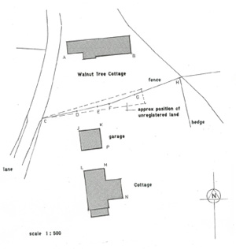

Architectural and Design Services
Our initial visit to discuss your ideas is free. We will also advise you of the planning and other issues that might be involved.From there we can carry out a measured survey, draw up plans of the existing building and provide a sketch of your proposals. It may also be appropriate at this stage to look at alternative schemes - Improvements you may not have considered which might deliver even greater benefits.
Once a final scheme is decided upon we will draw up detailed plans for your final approval and make all necessary applications to the Local Authority.
We can also produce specifications and obtain quotations from contractors. Finally, we can supervise the work to completion.
Additional services
- Site and block plans for sales or other purposes
such as establishing ownership. - Land surveys for planning etc.
- Landscaping plans.
